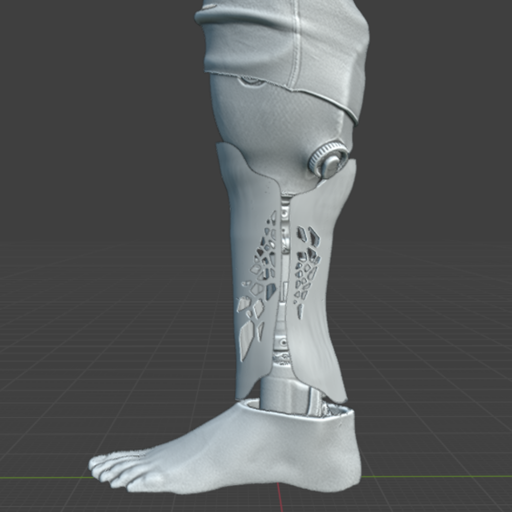
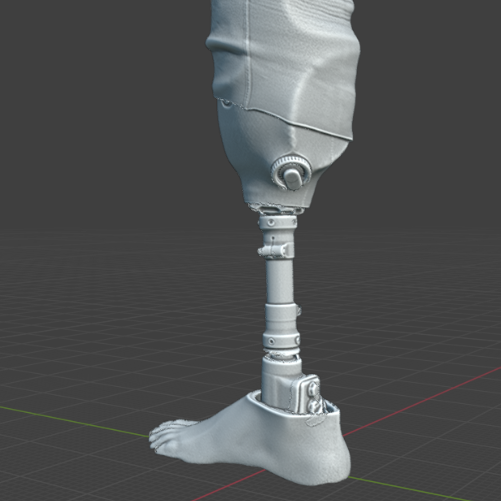
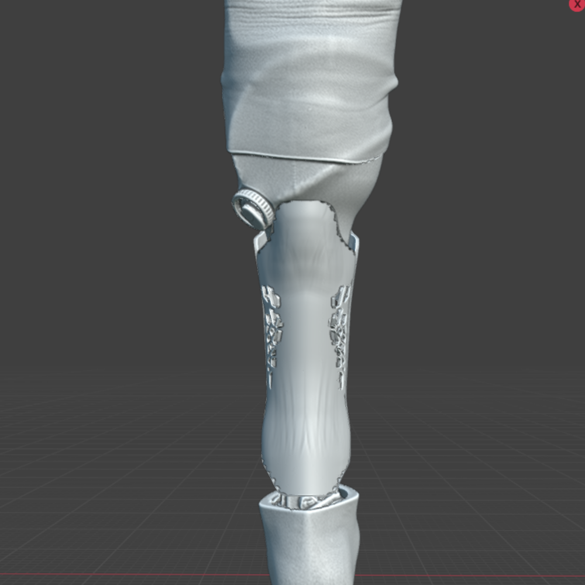
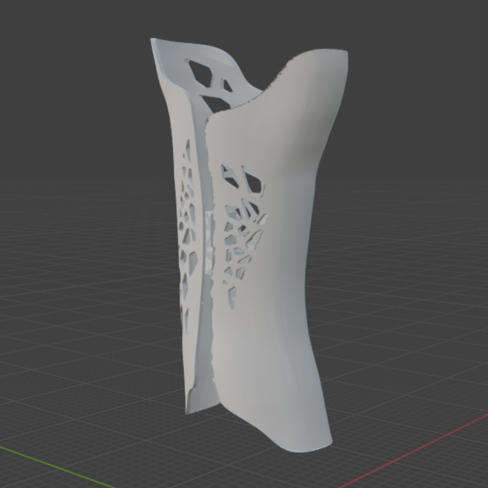

Zero Turn Lawn Mower
Fully detailed zero-turn mechanical assembly modeled with precise scaling, structural alignment, and component relationships.


Design portfolio
Mechanical and product-focused designs made in Blender, Onshape, and SolidWorks.
Fully detailed zero-turn mechanical assembly modeled with precise scaling, structural alignment, and component relationships.
Designed and fabricated a custom cosmetic cover for my father's prosthetic leg. I 3D scanned the prosthetic and used the scan as a reference to create a removable cover for the narrow pylon section, creating a more natural full-leg appearance underneath clothing.




High-detail front-end assembly of a 2024 Indian Challenger, featuring wheel geometry, dual-disc braking components, and constrained fork structures.


A planetary gear system emphasizing proportional symmetry, gear engagement, and structural balance.


Designed a structurally balanced model applying principles of tension and compression.

Functional butterfly valve body with precise dimensional constraints and component alignment.

Designed and optimized a lightweight race car and produced a functional 3D-printed prototype.


Dual-bearing assembly supporting rotational motion with improved load distribution and alignment accuracy.


Lightweight Aluminum 7075 connecting rod optimized for strength and durability, with a final weight of 219.013 grams.

Flange yoke modeled with accurate geometric constraints, alignment, symmetry, and mechanical proportions.

Pipe segment featuring accurate flange spacing, symmetric hole placement, and clean mechanical detailing.

Shaft support bracket with a slotted mounting base and precisely constrained cylindrical clamp.